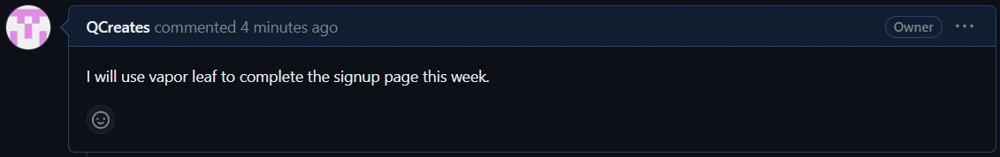
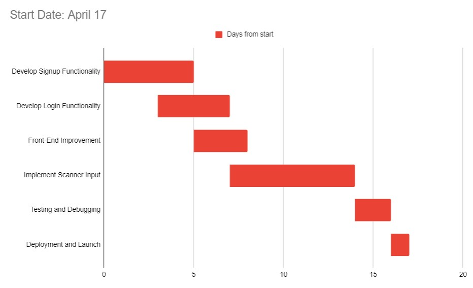

Journal Entries
25/4/2023
I plan on getting started with the backend to see if I can get it working on my own, then it should go pretty easily from there.
Gantt Chart:
17/4/2023
Fixes the backend
Gantt Chart:
^ New Journals From Here ^
31/3/2023
Technical challenges
Scheduling challenges
Interpersonal challenges
Significant Achievements
24/3/2023
Technical challenges
Scheduling challenges
Interpersonal challenges
Significant Achievements
Achievement One
17/3/2023
Technical challenges
Scheduling challenges
Interpersonal challenges
Significant Achievements
27/1/2023
Technical challenges
Project is not yet up so I had no technical challenges. I expect there to be many issues with the mechanics however.
Scheduling challenges
We all have pretty tight schedules so it will be a bit difficuilt to align them.
Interpersonal challenges
So far there are not any interpersonal challenges
Significant Achievements
1/6/2023
Development Engineer
Designing and maintain software solutions are a couple of responsibilities of a development engineer. Testing code, and troubleshooting that code can be a part of that role as well. The dev engineer is also responsible for making sure the project is viable and meets the standards required. To make sure the product is completed on time, the development engineer must collaborate well with the other team members and managers.
QA Engineer
The QA engineer must test the product to ensure it meets the standards of the product manager. They will look for any bugs and write any possible issues to Github and return it to the engineer if it does not meet expectations. This role is responsible for making sure that the entire project not only works, but meets/exceeds the expectations of the product manager.
Project Manager
The project manage needs to define functionality and make it unambiguous by all team members. The project manager is the one who makes the “rubric” for the project itself. The way this is done is by looking at what management wants, what users are asking for, and what the client wants.